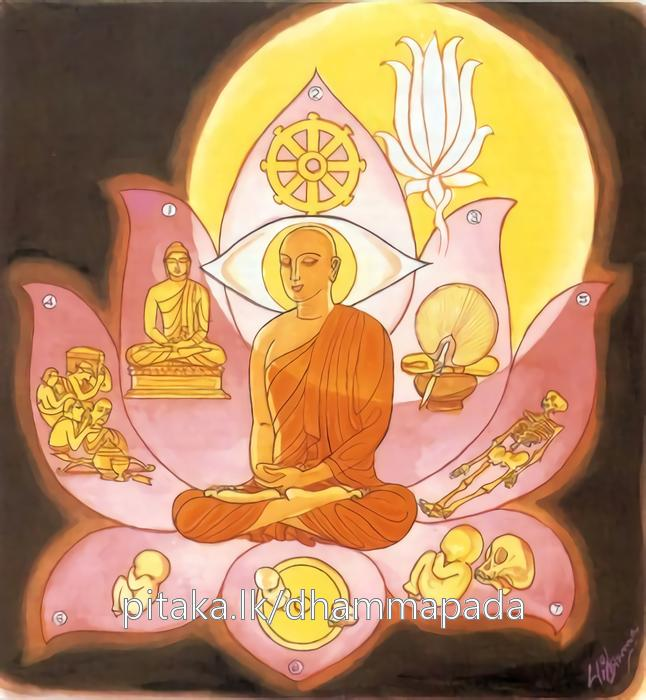

26-28 මුගලන් මහතෙරුන්ට දෙසූ ධර්මදේශනාවක්
මෙම කතාව ධම්මපද අටුවාවෙන් ද කියවන්න.
යස්සාලයා න විජ්ජන්ති අඤ්ඤාය අකථංකථී
අමතොගධං අනුප්පත්තං තමහං බ්රූමි බ්රාහ්මණං.
යමකුට තෘෂ්ණාව නැත් ද, (බුද්ධාදි අෂ්ටවස්තූන් යථාභූත වශයෙන්) දැන (එය පිළිබඳ වැ) විචිකිච්ඡාව පහ ව ගියේ ද, නිර්වාණයට ඇතුළත් ව එ ම ක්ෂේමභූමියට පැමිණියා වූ වීතරාග පුද්ගලයා බ්රාහ්මණ යැ යී මම් කියමි.

“යස්සාලයා න විජ්ජන්ති” යනාදී වූ ධර්මදේශනා තොමෝ මුගලන් තෙරුන් ඇරැබැ දේශනා කරණ ලද්දී ය. එහි කතා පුවත ශාරීපුත්ර මහාස්ථවිරකථාවස්තුයෙහි කී සෙයින් දත යුතු ය. මෙහි වනාහි බුදුරජානන් වහන්සේ මුගලන් මහතෙරුන්ට කිසිත් තැනෙක කිසිත් දැයෙක තෘෂ්ණාවක් නැති බව දක්වා මේ ධර්මදේශනාව කළ සේක.
යස්සාලයා න විජ්ජන්ති අඤ්ඤාය අකථඞ්කථි,
අමතොගධං අනුප්පත්තං තමහං බ්රෑමි බ්රාහ්මණන්ති.
යමක්හට ආලයෝ නැත්තාහු ද, දැන කෙසේ කෙසේ දැ යි පැවැති සැක කතා නැත්තී ද, නිවනට බැස නිවනට පිළිවෙළින් පැමිණියා වූ ඔහු, මම බමුණු යි කියමි.
යස්ස ආලයා න විජ්ජන්ති අඤ්ඤාය අකථංකථි = යමක්හට ආලයෝ නැත්තාහු ද දැන කෙසේ කෙසේ දැයි පැවැති සැක කතා නැත්තී ද.
අමතොගධං අනුප්පත්තං තං අහං බ්රෑමි බ්රාහ්මණං = නිවනට බැස නිවනට පිළිවෙළින් පැමිණි ඔහු, මම බමුණු යි කියමි.
‘ආලය’ නම්: තෘස්ණා ය. පස් කම් ගුණයෙහි සත්ත්වයන් පුන පුනා රඳවන බැවින් අලවන බැවින් ඕ ආලය නම් වූ ය. පංචකාමය ද ආලය යි ගැණේ. ලෝකයෙහි ඇති තාක් පෘථග්ජනසත්ත්වයෝ තෘෂ්ණාව නිසා පස්කම්හි ඇලෙති. එහෙයින් පස්කම් ද ආලය නම් වේ. එක්සිය අටක් වූ තෘෂ්ණා විචරිතයෝ සත්ත්වයන් අලවති. එහෙයින් ඔවුහු ද ආලය යි කියනු ලැබෙත්. පංචකාමසඞ්ඛ්යාත වූත් තෘෂ්ණාසඞ්ඛ්යාත වූත් ආලයයන් කරණ කොට ගණෙ සත්ත්වයෝ කෙළිත් නු යි ආලායාරාමයහ. එහි ඇලෙත් නු යි ආලයරතයහ. එහි මුදිත වූවාහු යි ආලයසම්මුදිතයහ.
මල්පලින් බර වූ ගස්වැල්වලින් ගැවසී ගත් උයනකට වන් පුරුෂ, එහි සිත් අලවා වෙසේ ද එයින් නික්ම එන්නට නො කැමැති වේ ද එපරිද්දේන් මේ කාමාලය තෘෂ්ණාලයන් කරණ කොට ගෙණ ද සත්ත්වයෝ සංසාරවෘත්තයෙහි අතිශයින් ඇලෙත්. අතිශයින් සතුටුවූවාහු වෙත්. සසර ම ගැටෙන්නට සසර ම ගැලෙන්නට කැමැති වෙත්. එයින් ගැලවී ගන්නට නො ද කැමැති වෙත්. බුදුරජානන් වහන්සේ එබඳු සත්ත්වයන් බලා ආලයරාමා, ආලයරතා, ආලයසම්මුදිතා යනු වදාළ සේක.
බුද්ධ - ධම්ම - සඞ්ඝ - සික්ඛා - පුබ්බන්ත - අපරන්ත - පුබ්බන්තාපරන්ත - ඉදප්පච්චයතාපටිච්චසමුප්පන්නධම්ම යන මේ අට තැන දැන එහි සැක දුරු කර සිටියේ ‘අකථංකථි’ නම් වේ. “අට්ඨවත්ථූනි යථාභූතං ජානිත්වා අට්ඨවත්ථුකාය විචිකිච්ඡාය නිබ්බිවිචිකිච්ඡා” යනු අටුවා. [1]
‘අමත’ නම්: නිවන ය. මෙහි මරණයක් නැති බැවින් කෙලෙසුන්ට ප්රතිපක්ෂ බැවින් නැසීමක් නැති බැවින් නිවන අමත නම් විය. ඒ මේ නිවනට නැමී සිටියේ බැස සිටියේ ‘අමතොගධ’ නම් ‘අනුප්පත්තං’ යනු කියන ලදි.
යමක්හට කිසි තැනෙක කිසි දැයෙක තෘෂ්ණා සඞ්ඛ්යාත ආලයෝ නැද්ද, යමෙක් බුද්ධාදිවස්තු අට, ඇති සැටියෙන් දැන කෙසේ දැ යි පැවැති සැකය මුළුමනින් තරණය කොට සිටියේ ද, මෙසේ තෘෂ්ණා රහිත වූ සැක නැත්තා වූ මගපල සිත් වලට අරමුණු කිරීම් විසින් නිවනට බැස නිවනට පැමිණි ඔහු බ්රාහ්මණ නම් වන්නේ ය.
මහාමෞද්ගල්යායන මහාස්ථවිර වස්තුව නිමි.
-
1-7 ‘අනික්කසාවො’ යනු බලනු. ↑